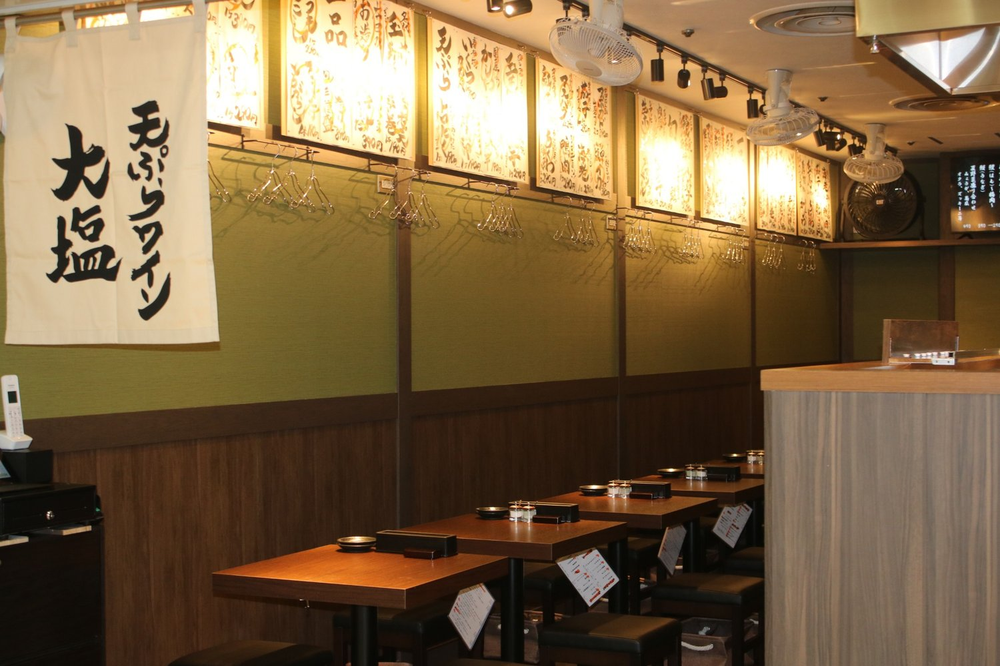
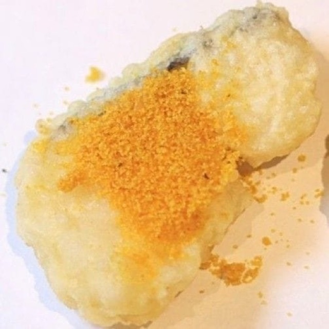
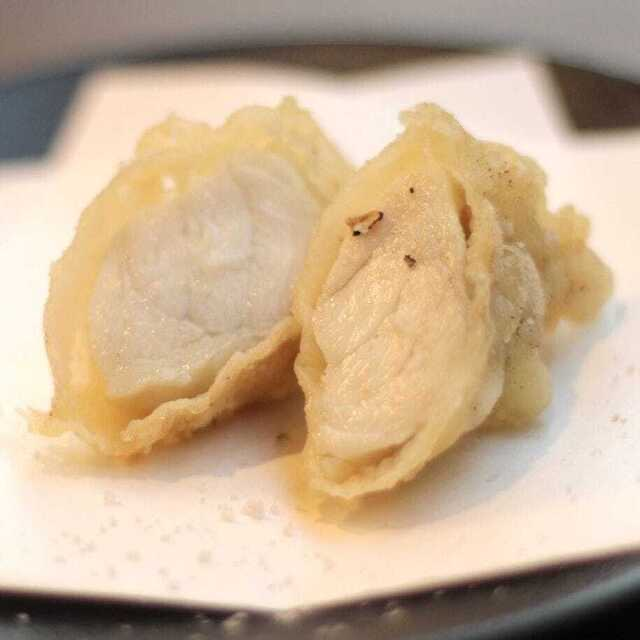
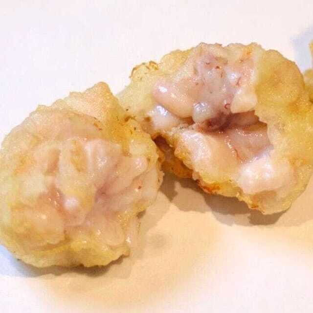
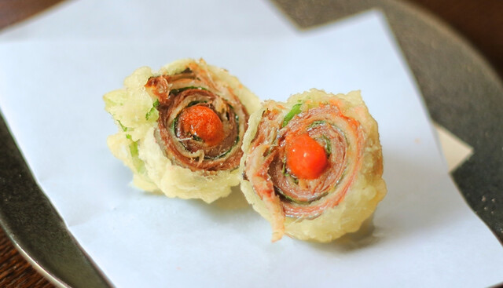
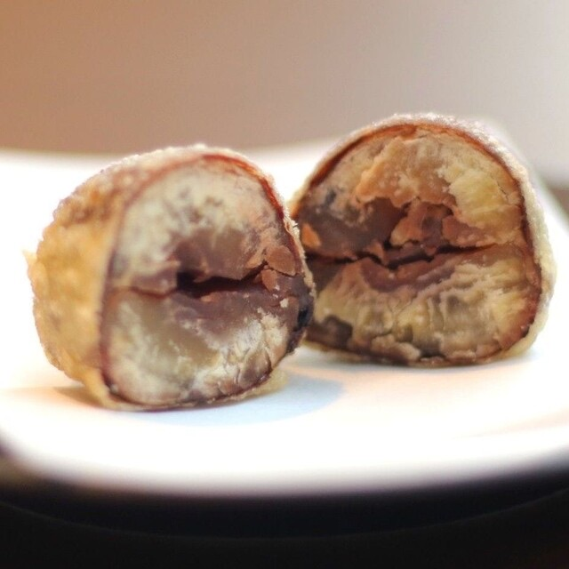
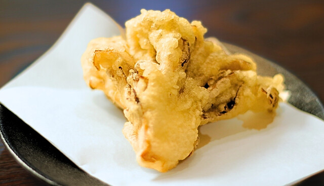
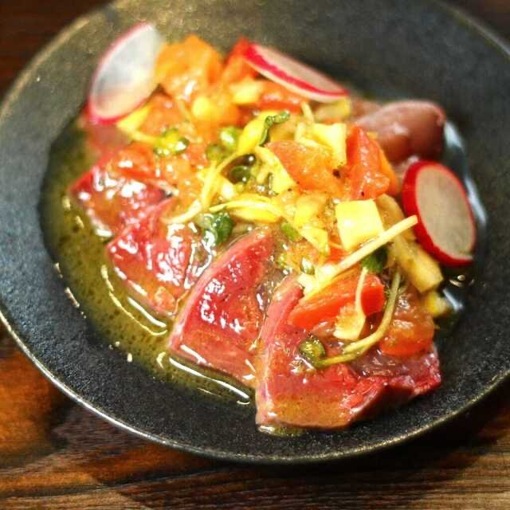
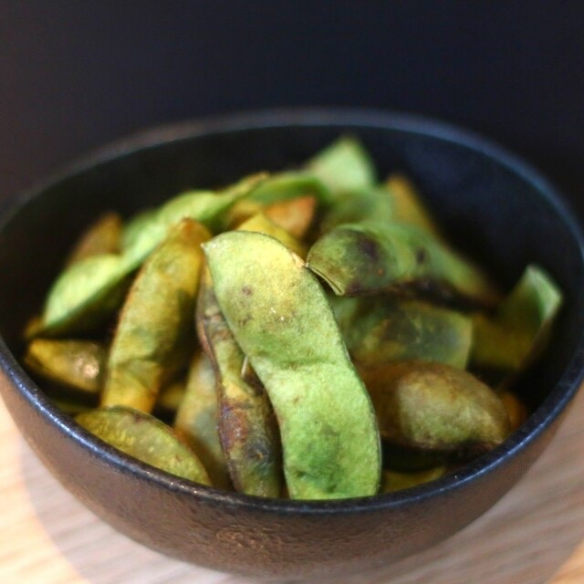
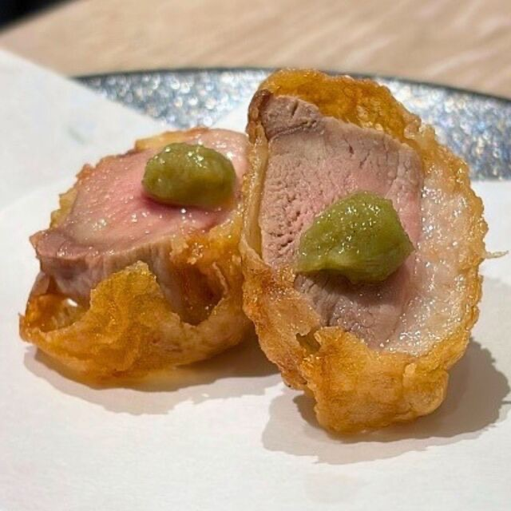

 梅田エリア
梅田エリア
大阪駅前第三ビル店
大阪駅前第三ビル店の旬

鱈(たら)~からすみがけ~319円
フグ～トリュフ塩～429円
鱈の白子天539円
秋刀魚~梅しそ巻~429円
丹波栗319円
舞茸319円
鰤のカルパッチョ～ジェノベーゼ風～649円
丹波の黒枝豆429円
鴨肉 １ケ319円鱈(たら)~からすみがけ~319円フグ～トリュフ塩～429円鱈の白子天539円秋刀魚~梅しそ巻~429円丹波栗319円舞茸319円鰤のカルパッチョ～ジェノベーゼ風～649円丹波の黒枝豆429円鴨肉 １ケ319円
店舗情報
- 住所
- 大阪市北区梅田1-1-3 第三ビルB2F
- 電話
- 06-6343-3545
営業時間・定休日
- 月・火・水・木
- 11:30 - 14:00（L.O. 13:45）
17:30 - 21:30 - 金・祝前日
- 11:30 - 14:00（L.O. 13:45）
17:30 - 22:45（L.O. 22:00） - 土
- 11:30 - 22:45（L.O. 料理22:00 ドリンク22:02）
- 日
- 11:30 - 21:30
- 定休日
- なし